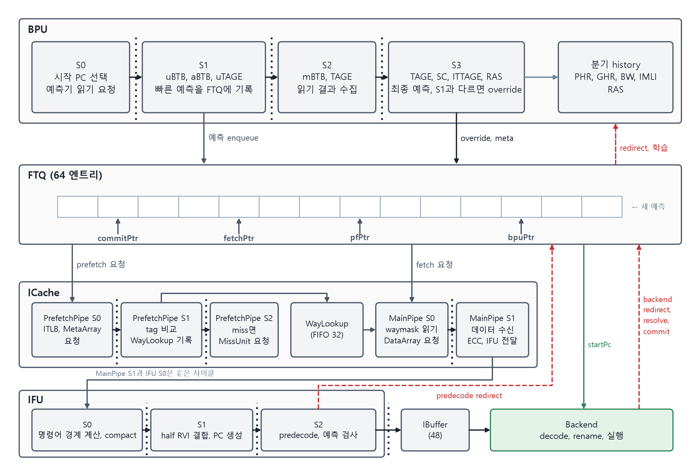
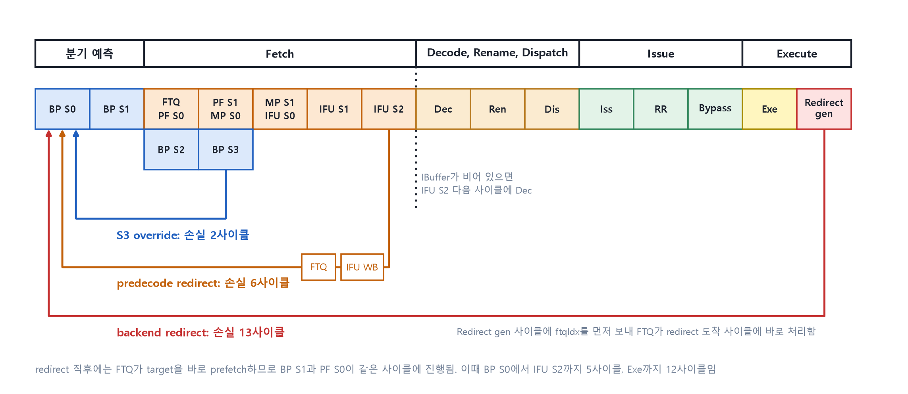

2장 · 기존 frontend는 어떻게 움직이는가
뒤 장을 읽는 데 필요한 만큼만 정리한다. 이미 아는 독자는 2.5절의 손실 사이클 표만 보고 넘어가도 된다.
이 장에서 배우는 것
- BPU 네 스테이지가 각각 무엇을 읽고 무엇을 쓰는지 말할 수 있다.
- FTQ의 포인터 네 개가 같은 큐 위에서 어떤 순서로 움직이는지 그릴 수 있다.
- 예측이 틀렸을 때 어디서 발견되는지에 따라 손실 사이클이 얼마나 달라지는지 계산할 수 있다.

그림 2-1. 기존 frontend 스테이지 블록도.
BPU는 어디서 빠르고 어디서 정확한가
BPU는 네 스테이지다. 빠른 예측과 정확한 예측이 다른 스테이지에서 나온다.
- S0. 다음에 예측할 블록의 시작 PC를 고르고 예측기 읽기를 시작한다.
- S1. uBTB, aBTB, uTAGE로 빠른 예측을 만들어 FTQ에 바로 기록한다. 이 target이 다음 사이클의 시작 PC가 된다.
- S2. mBTB, TAGE 등의 SRAM 읽기 결과를 모은다.
- S3. TAGE, SC, ITTAGE, RAS로 최종 예측을 만든다. S1 예측과 다르면 override가 발생하고 FTQ를 되감아 다시 쓴다.
여기서 하나를 기억해 두자. 예측기는 사이클당 블록 1개만 읽을 수 있다. 2-taken 설계는 이 제약에서 출발한다.
FTQ 위를 움직이는 네 포인터
FTQ는 64 엔트리 원형 큐다. 엔트리 하나가 fetch block 하나다. 포인터 네 개가 같은 큐 위를 순서대로 따라간다.
| 포인터 | 뜻 |
|---|---|
| bpuPtr | BPU가 다음 예측을 쓸 위치 |
| pfPtr | 다음에 ICache prefetch를 보낼 위치 |
| fetchPtr | 다음에 fetch를 보낼 위치 |
| commitPtr | backend가 commit을 마친 위치 |
엔트리 본체인 시작 PC와 taken 분기 위치는 S1에 기록된다. 예측기 meta는 같은 블록이 S3에 도달했을 때 기록된다. 한 엔트리가 두 번에 걸쳐 채워진다는 점이 뒤에서 중요해진다.
ICache는 왜 두 번 조회하는가
- PrefetchPipe. FTQ의 pfPtr 엔트리를 받아 ITLB와 MetaArray를 조회한다. 어느 way에 있는지(waymask)를 WayLookup에 기록하고, miss면 MissUnit에 미리 요청한다.
- WayLookup. 32 엔트리 FIFO. PrefetchPipe가 구한 waymask를 MainPipe가 쓸 때까지 보관한다.
- MainPipe. FTQ의 fetchPtr 엔트리와 WayLookup의 waymask로 DataArray를 읽어 IFU에 넘긴다.
핵심은 주소 변환과 tag 비교를 prefetch 단계에서 미리 끝내 둔다는 점이다. MainPipe는 데이터만 읽는다.
IFU는 무엇을 검사하는가
- S0. 명령어 경계를 찾고 유효 명령어를 앞으로 모은다(compact).
- S1. 블록 경계에 걸친 명령어를 이어 붙이고 PC를 만든다.
- S2. predecode로 예측을 검사한다. 틀리면 predecode redirect를 FTQ로 보낸다. 결과는 IBuffer에 들어간다.
실험 2 · 틀린 자리에 따라 손실 사이클 세기

그림 2-2. 파이프라인 스테이지와 경우별 손실 사이클. backend에 stall이 없다고 가정한다.
설명용 모델. FTQ, WayLookup, IBuffer가 비어 있고 backend가 막히지 않는다고 가정한다. 평소에는 이 큐들에 블록이 쌓여 있어 지연이 가려진다.
스테이지를 먼저 세자. frontend는 BP S0부터 IFU S2까지 7 스테이지다. BP S2와 S3은 fetch와 나란히 진행된다. S1 예측으로 먼저 fetch를 시작하고 S3이 뒤에서 검증하는 구조다. 분기는 Dec, Ren, Dis, Iss, RR, Bypass를 거쳐 Exe에서 풀린다. BP S0부터 세면 14번째 스테이지다.
손실은 "틀리지 않았다면 다음 명령어가 그 스테이지에 있었을 시점"과 비교한 값이다.
| 경우 | 손실 사이클 | 계산 |
|---|---|---|
| S1 예측이 맞음 | 0 | S1의 target이 같은 사이클에 다음 블록의 S0 PC가 된다 |
| S3 override | 2 | S3에 도달한 사이클에 S0 PC를 교정한다. 그사이 S1, S2에 들어온 뒤 블록 2개를 버린다 |
| predecode redirect | 6 | 전달 2사이클(IFU write back, FTQ) + BP S0에서 IFU S2까지 5사이클 − 1 |
| backend redirect | 13 | 전달 2사이클(Redirect gen, FTQ 도착) + BP S0에서 Exe까지 12사이클 − 1 |
해 볼 것. 표의 마지막 행을 보자. pair의 두 번째 분기 BR2는 S3 예측기를 거치지 않는다(4장). BR2가 틀리면 어느 행으로 떨어지는가. backend redirect, 13 사이클이다. 이 숫자가 4장에서 pair를 보수적으로 내는 이유가 된다.
조건에 따라 달라지는 것. 위 값은 기본 경로다. 다음 조건이 사이클을 더하거나 뺀다.
- prefetch bypass. redirect 다음 사이클에 FTQ가 target을 PrefetchPipe로 바로 보낸다. redirect가 연달아 오면 bypass가 나가지 않아 1사이클이 더해진다.
- ftqIdx 선행 전달. backend는 redirect보다 한 사이클 먼저 ftqIdx를 보낸다. ROB flush처럼 선행 전달이 없는 redirect는 1사이클이 더해진다.
- WayLookup bypass. WayLookup이 비어 있고 single prefetch일 때 PF S1과 MP S0이 같은 사이클에 진행된다.
- ITLB miss, ICache miss, backend의 operand 대기와 issue 경쟁은 그만큼 더해진다.
핵심 정리
- S1은 빠르고 S3은 정확하다. S1 예측으로 fetch를 먼저 시작하고 S3이 뒤에서 검증한다.
- 예측기는 사이클당 블록 1개만 읽는다. 이 제약이 2-taken 설계의 출발점이다.
- FTQ 엔트리는 S1에 본체가, S3에 meta가 기록된다. 두 번에 걸쳐 채워진다.
- 틀린 자리가 뒤로 갈수록 비싸다. S3 override 2, predecode 6, backend 13 사이클이다.
확인 퀴즈
- S3 override가 버리는 블록은 몇 개이고 왜 그 수인가?
- WayLookup이 없다면 MainPipe는 무엇을 더 해야 하는가?
- backend redirect 손실이 13인데, 분기가 Exe에서 풀린 뒤 올바른 target 명령어가 Exe에 도달하는 것은 몇 번째 사이클인가?
답
- 2개. S1과 S2에 들어온 뒤 블록이다. S3에 도달한 사이클에 S0 PC를 바꾸므로 그 둘만 버린다.
- ITLB 조회와 MetaArray tag 비교. prefetch 단계가 미리 끝내 둔 것이 이 둘이다.
- 14번째. 전달 2사이클과 BP S0에서 Exe까지 12사이클을 더한 값이다.